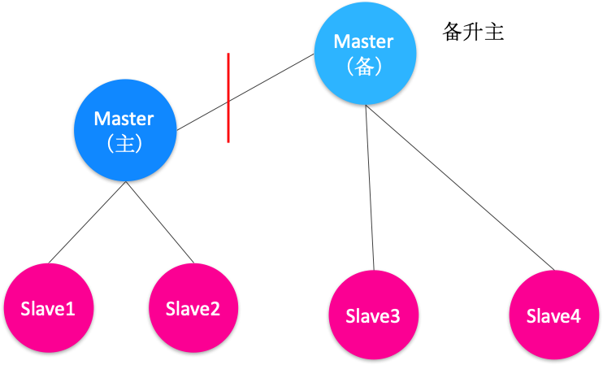
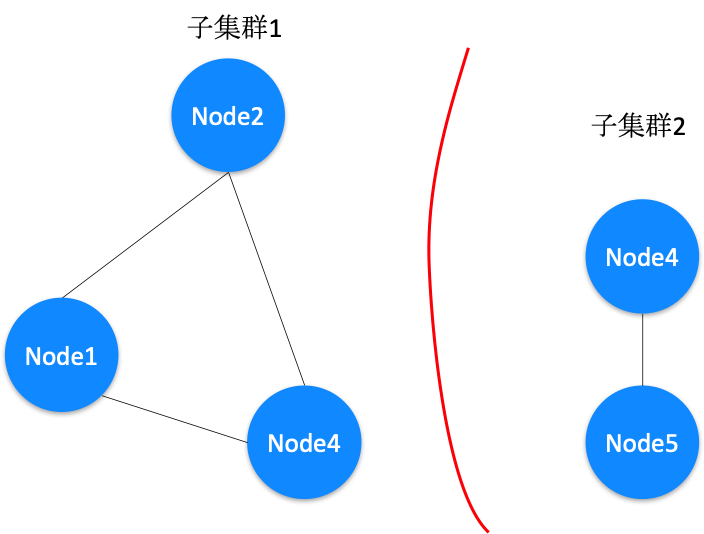
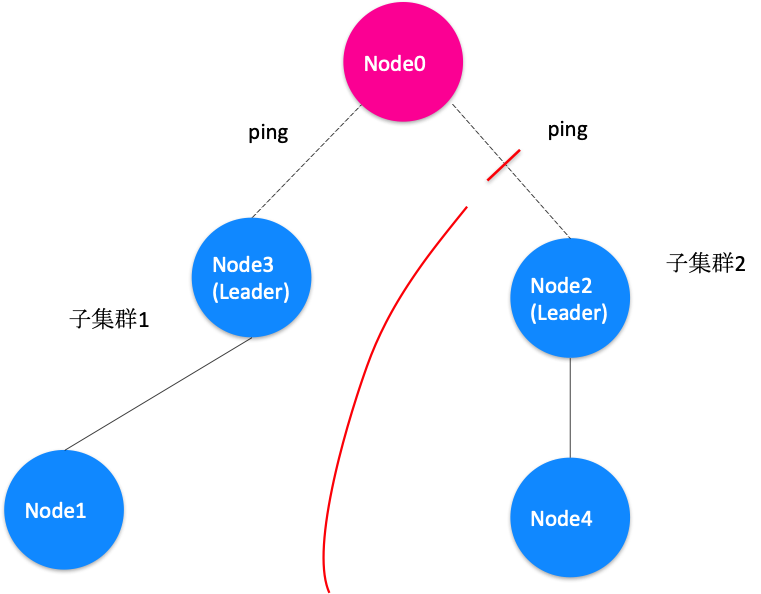

- 00 开篇词 四纵四横，带你透彻理解分布式技术.md.html
- 01 分布式缘何而起：从单兵，到游击队，到集团军.md.html
- 02 分布式系统的指标：啥是分布式的三围.md.html
- 03 分布式互斥：有你没我，有我没你.md.html
- 04 分布式选举：国不可一日无君.md.html
- 05 分布式共识：存异求同.md.html
- 06 分布式事务：All or nothing.md.html
- 07 分布式锁：关键重地，非请勿入.md.html
- 08 分布式技术是如何引爆人工智能的？.md.html
- 09 分布式体系结构之集中式结构：一人在上，万人在下.md.html
- 10 分布式体系结构之非集中式结构：众生平等.md.html
- 11 分布式调度架构之单体调度：物质文明、精神文明一手抓.md.html
- 12 分布式调度架构之两层调度：物质文明、精神文明两手抓.md.html
- 13 分布式调度架构之共享状态调度：物质文明、精神文明多手协商抓.md.html
- 14 答疑篇：分布式事务与分布式锁相关问题.md.html
- 15 分布式计算模式之MR：一门同流合污的艺术.md.html
- 16 分布式计算模式之Stream：一门背锅的艺术.md.html
- 17 分布式计算模式之Actor：一门甩锅的艺术.md.html
- 18 分布式计算模式之流水线：你方唱罢我登场.md.html
- 19 分布式通信之远程调用：我是你的千里眼.md.html
- 20 分布式通信之发布订阅：送货上门.md.html
- 21 分布式通信之消息队列：货物自取.md.html
- 22 答疑篇：分布式体系架构与分布式计算相关问题.md.html
- 23 CAP理论：这顶帽子我不想要.md.html
- 24 分布式数据存储系统之三要素：顾客、导购与货架.md.html
- 25 数据分布方式之哈希与一致性哈希：“掐指一算”与“掐指两算”的事.md.html
- 26 分布式数据复制技术：分身有术.md.html
- 27 分布式数据之缓存技术：“身手钥钱”随身带.md.html
- 28 分布式高可靠之负载均衡：不患寡，而患不均.md.html
- 29 分布式高可靠之流量控制：大禹治水，在疏不在堵.md.html
- 30 分布式高可用之故障隔离：当断不断，反受其乱.md.html
- 31 分布式高可用之故障恢复：知错能改，善莫大焉.md.html
- 32 答疑篇：如何判断并解决网络分区问题？.md.html
- 33 知识串联：以购买火车票的流程串联分布式核心技术.md.html
- 34 搭建一个分布式实验环境：纸上得来终觉浅，绝知此事要躬行.md.html
- 特别放送 Jackey：寄语天涯客，轻寒底用愁.md.html
- 特别放送 分布式下的一致性杂谈.md.html
- 特别放送 崔新：追根溯源，拨开云雾见青天.md.html
- 特别放送 徐志强：学习这件事儿，不到长城非好汉.md.html
- 特别放送 那些你不能错过的分布式系统论文.md.html
- 结束语 为什么说提升职业竞争力要从尊重、诚实开始？.md.html
- 捐赠
32 答疑篇：如何判断并解决网络分区问题？
你好，我是聂鹏程。今天，我来继续带你打卡分布式核心技术。
到目前为止，“分布式技术原理与算法解析”专栏已经接近尾声了。在这里，我首先要感谢你坚持学习每一篇文章，以及对每一道思考题的积极思考与讨论，并在此基础上扩展了类似问题。
比如@Jackey、@Eternal、@leslie、@mt11912、@小白啊、@随心而至等同学，一直在跟着专栏的更新节奏学习，并非常积极地在留言区留言讨论、总结自己的理解，并查询相关资料补充文中未讲解到或没有深入展开的问题。
今天，我梳理了文后的留言，发现大家对最近几篇文章介绍的分布式高可靠问题特别感兴趣，特别是我没有详细展开的网络分区问题。
比如，在第4篇文章“分布式选举：国不可一日无君”中，我给你留下的思考题是集群中是否会存在双主的场景，很多同学提到双主是网络分区导致的。
再比如，在第31篇文章“分布式高可用之故障恢复：知错能改，善莫大焉”中，我给你留下的思考题是，如何判断以及处理网络分区。
因此，在今天这篇文章中，我将会与你深入探讨网络分区问题，以帮助你进一步理解并解决业务中的故障恢复问题。
什么是网络分区？
我们先来看看网络分区到底是什么吧。在第31篇文章分享故障恢复时，我与你介绍了故障类型中的网络故障，网络分区就是其中的一种故障类型。
通常情况下，网络分区指的是在分布式集群中，节点之间由于网络不通，导致集群中节点形成不同的子集，子集中节点间的网络相通，而子集和子集间网络不通。也可以说，网络分区是子集与子集之间在网络上相互隔离了。
那么，应该如何判断是否发生了网络分区呢？
如何判断是否发生了网络分区？
在分布式集群中，不同的集群架构网络分区的形态略有不同。所以，要判断是否发生了网络分区，我们需要弄清楚不同的分布式集群架构，即集中式架构和非集中式架构中的网络分区形态是什么样的。
首先，我们来看一下集中式架构的网络分区形态。
集中式架构中，Master节点通常以一主多备的形式部署，Slave节点与Master节点相连接，Master节点的主和备之间会通过心跳相互通信。
以Master节点主备部署为例，如下图所示，集中式架构中的网络分区主要是主节点与备节点之间网络不通，且一部分Slave节点只能与主Master节点连通，另一部分只能与备Master节点连通。

图1 集中式架构中网络分区的形态
然后，我们再来看看非集中式架构中的网络分区形态。
如下图所示，非集中式架构中，节点是对称的，因此网络分区的形态是形成不同子集，子集内节点间可互相通信，而子集之间的节点不可通信。比如，子集群1中Node1、Node2和Node4可以相互通信，子集群2中Node3和Node5也可以相互通信，但子集群1和子集群2之间网络不通。

图2 非集中式架构中网络分区的形态
从集中式和非集中式这两种分布式集群架构的网络分区形态可以看出，要判断是否形成网络分区，最朴素的方法就是判断节点之间心跳是否超时，然后将心跳可达的节点归属到一个子集中。
由于非集中式系统中，每个节点都是对等的、提供的服务相同，所以当多个子集群之间不可达，或部分节点出现故障后，尽管提供的服务质量（SLA）可能会下降，但并不影响这些剩余节点或子集群对外提供服务。所以，接下来我将与你重点讨论集中式系统的网络分区问题。
网络分区最微妙的地方在哪里？
在工作和生活中遇到一个问题，你的本能反应估计是，有问题就解决问题好了。而网络分区最微妙的地方在于，你很难通过程序去判断问题到底出在哪里，而只能通过心跳等手段知道部分节点的网络不可达了。
但，导致节点不可达的原因有很多，有可能是网络的原因，也有可能是节点本身的问题。也就是说，我们无法通过一些症状就判断出是否真的产生了分区。另外，你也很难通过程序去判断这个问题是不是很快就会被恢复。这也是应对网络分区问题最微妙的地方。
网络分区出现概率较高的场景是什么？
在第31篇文章留言区中有同学提到：
个人理解，网络分区故障一般是针对不同集群来说的，单个集群一般在同一个网络中，集群内的单点故障并不会出现网络分区。当整个集群的网络出故障时，才会有分区的说法。能想到检测办法是，单独有机器对不同集群的主节点进行心跳检测来判断。
首先，我要澄清的是，我们说的网络分区肯定是就同一个集群而言的。对于不同集群来说，正是因为集群间本就没有太多的交互，才需要从逻辑上分割成不同的集群，这些逻辑上不同的集群本就是可以独立对外提供服务的。
当集群跨多个网络时，确实正如这位同学所说，从概率上讲相对容易出现网络分区的情况，比如一个业务集群部署在多个数据中心时。所以，集群跨多网络部署时，就是网络分区出现概率较高的场景。
接下来，我们看看如何处理网络分区吧。
网络分区有哪些常见的处理方法？
为了不影响分布式系统的高可用性，检测到网络分区后，我们就需要尽快地进行处理。
假如，我们采用一种非常激进的方式去处理，即一旦发现节点不可达，则将不可达节点从现有集群中剔除，并在这个新集群中选出新的主。
以图1所示集中式集群为例，当备Master、Slave3和Slave4节点检测到主Master、Slave1和Slave2节点不可达时，剔除这些不可达节点后，备Master升主，连同Slave3和Slave4节点组成一个新的集群。
如果不可达是由于节点故障导致的，那么这种策略没有任何问题。这些剩余节点组成的集群可以继续对外提供服务。但，如果不可达是因为网络故障引起的，那么集群中的另一个子集，即主Master、Slave1和Slave2，也会采用同样的策略，仍然对外提供服务。这时，集群就会出现第22篇文章中讲到的双主问题了。
假如，我们采用一种保守的方式去处理，即节点一旦发现某些节点不可达，则直接停止自己的服务。这样确实解决了双主的问题，但因为不同分区之间的不可达是相互的，且所有的分区都采取了这种停服策略，就会导致系统中所有的节点都停止服务，整个系统完全不可用。这显然也不是我们想看到的。
那么，当系统中出现节点不可达后，如何在不出现双主的情况下，尽可能地提升系统的可用性呢？或者说，有没有什么更均衡的策略呢？
接下来，我就与你分享四种均衡的网络分区处理方法，即Static Quorum、Keep Majority、设置仲裁机制和基于共享资源的方式。
方法一：通过Static Quorum处理网络分区
Static Quorum是一种固定票数的策略。在系统启动之前，先设置一个固定票数。当发生网络分区后，如果一个分区中的节点数大于等于这个固定票数，则该分区为活动分区。
为了保证发生分区后，不会出现多个活动分区，导致出现双主或多主的问题，需要对固定票数的取值进行一些约束，即：固定票数≤ 总节点数≤2*固定票数 - 1。
这个策略的优点是，简单、容易实现，但却存在两个问题：
- 一是，对于分区数比较少的时候，比方2个分区时，该策略很容易选出一个唯一的活动分区。但是，当活动分区非常多的时候，由于各个分区的票数分散，不容易找到一个满足条件的分区，没有活动分区也就意味着整个集群不可用了。
- 二是，由于这种策略里固定票数是固定不变的，所以不适用于集群中有动态节点加入的场景。
方法二：通过Keep Majority处理网络分区
顾名思义，Keep Majority就是保留具备大多数节点的子集群。由于不限定每个分区的节点数超过一个固定的票数，所以可以应用于动态节点加入的场景。
假设，集群数为n，出现网络分区后，保留的子集群为节点数w≥n/2的集群。为防止出现双主或两个集群同时工作的情况，通常将集群总节点数n设置为奇数。
可想而知，若集群总数为偶数，比如图1集中式架构的例子中，子集群1和2都包含2个Slave节点，就会导致两个子集群同时存活，在业务场景只允许一个主的情况下，会导致业务运行不正确。
那么，如果真的出现了集群总节点数为偶数，两个子集群节点数均为总数一半时，又应该如何解决分区问题呢？
这时，我们可以在Keep Majority的基础上，叠加一些策略，比如保留集群节点ID最小的节点所在的子集群。如图1所示，假设集群节点总数为6，现在因为网络故障形成网络分区子集群1{主Master，Slave1, Slave2}和子集群2{备Master，Slave3, Slave4}，假设Slave1是ID最小的节点，那么此时要保留包含Slave1的子集群1。
虽然Keep Majority方法可以解决动态节点加入的问题，但也不适用于产生多分区的场景。因为随着分区数增多、节点分散，也难以在众多分区中出现一个节点数w≥n/2的分区。
前面我讲到集群跨多个网络部署时更容易产生网络分区，因此我不推荐采用Static Quorum和Keep Majority方法去处理跨多网络集群的网络分区问题。
方法三：通过设置仲裁机制处理网络分区
设置仲裁机制的核心是，引入一个第三方组件或节点作为仲裁者，该仲裁者可以与集群中的所有节点相连接，集群中所有节点将自己的心跳信息上报给这个中心节点。因此，该中心节点拥有全局心跳信息，可以根据全局心跳信息判断出有多少个分区。当出现网络分区后，由仲裁者确定保留哪个子集群，舍弃哪些子集群。
如下图所示，假设引入Node0作为第三个节点，该节点IP为10.12.24.35，当出现网络分区子集群1{Node1, Node3}和子集群2{Node2, Node4}时，每个子集群中选择一个Leader节点并ping一下Node0的IP，能ping通则保留，否则舍弃。比如下图中，子集群1可以ping通，子集群2 ping不通，因此保留子集群1。

图3 通过设置仲裁机制处理网络分区
方法四：基于共享资源的方式处理网络分区
说到共享资源，我们需要先回顾下分布式锁的相关知识。分布式锁是实现多个进程有序、避免冲突地访问共享资源的一种方式。
基于共享资源处理网络分区的核心，其实就类似于分布式锁的机制。也就是，哪个子集群获得共享资源的锁，就保留该子集群。获得锁的集群提供服务，只有当该集群释放锁之后，其他集群才可以获取锁。关于锁的管理和获取，你可以再回顾下第7篇文章中的相关内容。
这种方式的问题是，如果获取锁的节点发生故障，但未释放锁，会导致其他子集群不可用。因此，这种方式适用于获取锁的节点可靠性有一定保证的场景。
基于仲裁和共享资源的网络分区处理方法，其实都是依赖一个三方的节点或组件，然后借助这个第三方来保证系统中同时只有一个活动分区。所以，这两种处理方法适用于有一个稳定可靠的三方节点或组件的场景。
总结
今天，我与你进一步展开了分布式系统中的网络分区问题，以加深你对网络分区问题的检测、处理方式的理解，并帮助你在实践应用中处理网络分区问题。
关于网络分区的处理方法，其本质就是，在产生分区后，选出一个分区，保证同时最多有一个分区对外提供服务。基于此，我为你梳理了四种常见的处理方法，包括Static Quorum、Keep Majority、设置仲裁机制和基于共享资源的方式。
其中，基于Static Quorum的方法，因为涉及固定票数策略，所以不适用于处理多个分区，以及有动态节点加入的场景；基于Keep Majority的方法，可以解决动态节点场景下分区问题，但因为要求子集群节点数≥1/2总节点数，所以也不适用于处理多个分区的情况；而基于仲裁和共享资源的网络分区处理方法，其实都是依赖一个三方的节点或组件，所以适用于有一个稳定可靠的三方节点或组件的场景。
如果还有哪些思考题或者留言问题，还没来得及扩展的话，你可以留言给我，后续我会再找机会进行解答。最后，我要和你说的是，和我一起打卡分布式核心技术，一起遇见更优秀的自己吧。
篇幅所限，留言区见。
我是聂鹏程，感谢你的收听，欢迎你在评论区给我留言分享你的观点，也欢迎你把这篇文章分享给更多的朋友一起阅读。我们下期再会！
© 2019 - 2023 Liangliang Lee. Powered by gin and hexo-theme-book.